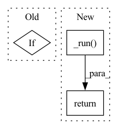

Pattern ID :16211
Before Change
// run pipeline
engine_inputs: List[numpy.ndarray] = self.process_inputs(pipeline_inputs)
if isinstance(engine_inputs, tuple):
engine_inputs, postprocess_kwargs = engine_inputs
else:
postprocess_kwargs = {}After Change
// use passed in executor
executor = kwargs.pop("executor")
return (
executor.submit(self._run, *args, **kwargs) // Non-Blocking call
if executor and not self.use_dynamic_batch()
else self._run( *args, **kwargs) // Blocking call
)
@staticmethodIn pattern: SUPERPATTERN
Frequency: 3
Non-data size: 3
Instances Fragment ID: 54179834
Project Name: neuralmagic/deepsparse
Commit Name: 0d5c3a33d87a0ea19e8071168517d5761d5f54bb
Time: 2022-07-28
Author: george@neuralmagic.com
File Name: src/deepsparse/pipeline.py
M Class Name: Pipeline
N Class Name: Pipeline
M Method Name: __call__(1)
N Method Name: __call__(1)
M Parent Class: ABC
N Parent Class: ABC
M File Name: src/deepsparse/pipeline.py
N File Name: src/deepsparse/pipeline.py
M Start Line: 160
M End Line: 194
N Start Line: 179
N End Line: 193
Before Change
scores = np.array(self._session.run([self._output_names[1]], named_inputs)[0]).flatten()
// Backward compatibility for sklearn <= 0.21
if constants.IFOREST_THRESHOLD in self._extra_config:
scores += self._extra_config[constants.IFOREST_THRESHOLD]
return scores
After Change
Utility functions used to emulate the behavior of the Sklearn API.
On data transformers it returns transformed output data
return self._run( self._decision_function, *inputs)
def score_samples(self, *inputs):
Utility functions used to emulate the behavior of the Sklearn API. Fragment ID: 54179833
Project Name: microsoft/hummingbird
Commit Name: 5fd2cf44673c51be73a77719d63b263f17f504a6
Time: 2020-10-21
Author: m.interlandi@gmail.com
File Name: hummingbird/ml/_container.py
M Class Name: ONNXSklearnContainerAnomalyDetection
N Class Name: ONNXSklearnContainerAnomalyDetection
M Method Name: decision_function(1)
N Method Name: decision_function(1)
M Parent Class: ONNXSklearnContainerRegression
N Parent Class: ONNXSklearnContainerRegression
M File Name: hummingbird/ml/_container.py
N File Name: hummingbird/ml/_container.py
M Start Line: 410
M End Line: 416
N Start Line: 497
N End Line: 497
Before Change
if self._is_regression:
return self._session.run(self._output_names, named_inputs)
elif After Change
Utility functions used to emulate the behavior of the Sklearn API.
On data transformers it returns transformed output data
return self._run( self._predict, *inputs)
class ONNXSklearnContainerClassification(ONNXSklearnContainerRegression):
Fragment ID: 54179826
Project Name: microsoft/hummingbird
Commit Name: 5fd2cf44673c51be73a77719d63b263f17f504a6
Time: 2020-10-21
Author: m.interlandi@gmail.com
File Name: hummingbird/ml/_container.py
M Class Name: ONNXSklearnContainerRegression
N Class Name: ONNXSklearnContainerRegression
M Method Name: predict(1)
N Method Name: predict(1)
M Parent Class: ONNXSklearnContainer
N Parent Class: ONNXSklearnContainer
M File Name: hummingbird/ml/_container.py
N File Name: hummingbird/ml/_container.py
M Start Line: 361
M End Line: 370
N Start Line: 435
N End Line: 435